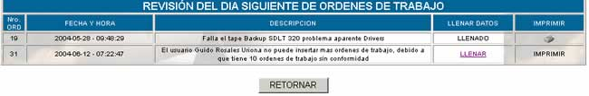
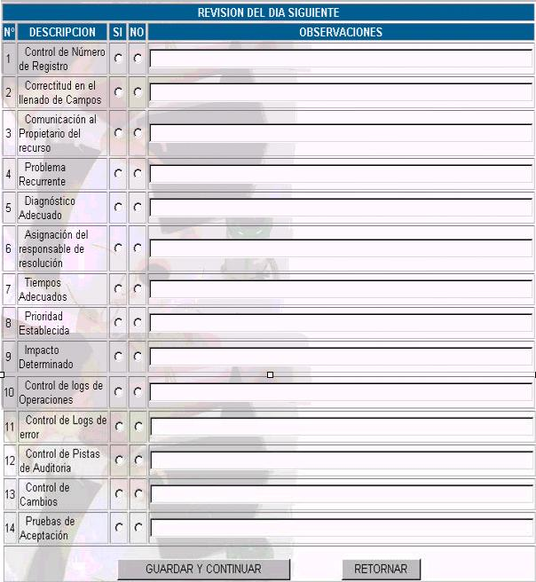
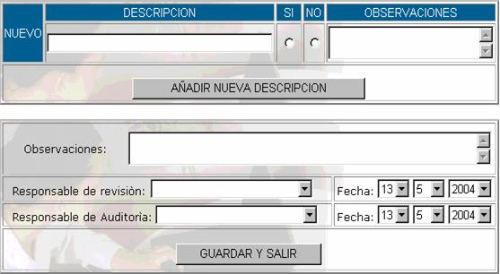

D&M (Desarrollo y
Mantenimiento)
Comprende todas las actividades del área de
desarrollo y mantenimiento que se deben realizar, una vez solucionado el
problema, orientadas a validar la adecuación y suficiencia de los pasos seguidos
en las diferentes etapas del proceso. Esta revisión, debe ser cumplida por el
Administrador de la Seguridad de la Información, para asegurar una revisión
independiente. Los datos que se ven se muestran en la siguiente pantalla:

Donde:
Nro Ord; número de orden de mesa.
Fecha y Hora; fecha y hora en la que se realiza la revisión.
Descripción; en esta parte se ve cuál fue el tipo de revisión que
se hizo.
Llenar Datos; para llenar la información acerca de la revisión que
se está realizando haga click en LLENAR y aparecerá la siguiente pantalla.

Nº; Número correlativo que nos indica con cuantas opciones de descripción
contamos.
Descripción; Nos indica cuál es la revisión que se esta realizando,
pudiendo ser este control de número de registro, correctitud
en el llenado de campos, comunicación al propietario del recurso, problema
recurrente, diagnóstico adecuado, asignación del responsable de resolución,
tiempos adecuados, prioridad establecida, impacto determinado, control de logs de operaciones, control de logs
de error, control de pistas de auditoría, control de
cambios, pruebas de aceptación. Todos estos campos ya están en el sistema, pero
si Usted desea agregar otro, puede hacerlo después de hacer click
sobre el botón guardar y continuar
SI/NO; En caso de que la opción de la descripción se esta llevando a cabo seleccione
la opción SI, caso contrario seleccione NO.
Observaciones; si es que existe alguna observación en el momento de
la revisión, se las coloca en este campo.
Una vez llenados estos campos presione sobre
el botón GUARDAR y CONTINUAR y se mostrará siguiente pantalla.

En la cual Usted puede agregar alguna
descripción si es que esto fuera necesario y a continuación verá los siguientes
campos:
Observaciones; si es que existe alguna observación general en el
momento de realizar la revisión, se las coloca en este campo.
Responsable de revisión; en este campo se especifica el nombre del responsable
que realizó la revisión.
Fecha; en este campo se especifica la fecha en la que el responsable de
revisión realizó dicha revisión.
Responsable de Auditoría;
en este campo se especifica el
nombre del responsable que realizó la auditoría.
Fecha; en este campo se especifica la fecha en la que el responsable de auditoría realizó dicha auditoría
Imprimir; haciendo click en esta
opción usted podrá obtener un reporte de los datos de la revisión.